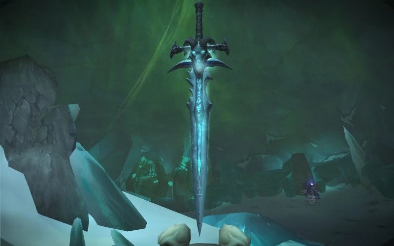
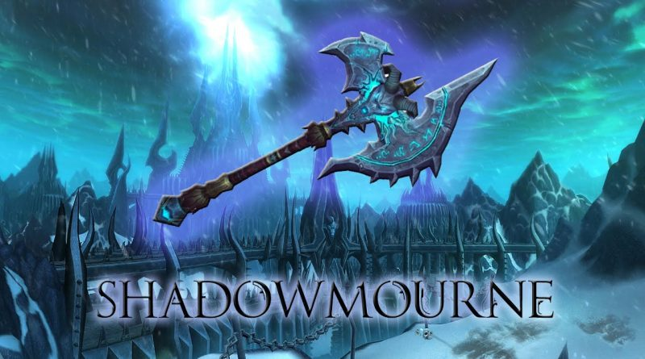
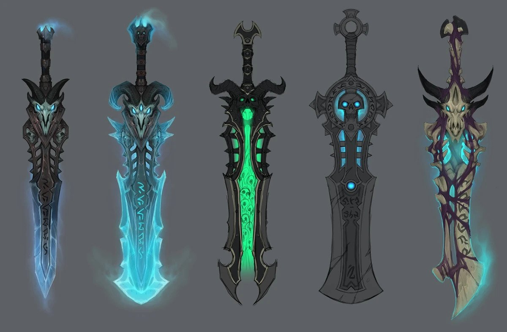
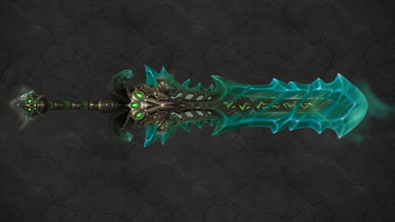

Az elátkozott rúnapenge
Végül Arthas és csapatai elérték azt a helyet, ahol a törpök térképei szerint a rejtélyes fegyver lehet, amely a Frostmourne nevet viselte. Arthas Muradinnal egy kisebb csapattal együtt indult el a penge megkeresésére, amelyhez egy ősi kapun kellett átkelniük. Először egy Őrző állta útjukat, aki az ő érdekükben igyekezett visszafordítani a csapatot. Azonban az Őrzőt legyőzték, és ott feküdt előttük egy jégtömbbe zárva jutalmuk, Arthas „jutalma” mindazért, amit eddig elért.Muradin hiába mondta el Arthasnak, hogy a penge el van átkozva, hogy olyan szörnyű árat kell fizetni érte, amely nem éri meg semmilyen célért sem, Arthas nem hallgatott rá. A herceg szemében nem volt más lehetőség, nem volt más út, előtte, akit a Fény is kezdett elhagyni, hiszen pörölye szinte alig világított már, csak ez az egyetlen fegyver volt elég erős ahhoz, hogy legyőzze a királyságát fenyegető veszélyt. Úgy érezte, népe megmentése érdekében semmilyen ár nem lehet túlzó, és készen állt arra, hogy ezt megfizesse. Így előre lépett, kiszabadította a fegyvert a jégtömbből, és felemelte a fegyvert. A jégtömb egyik darabja leütötte Muradint, Arthas azonban már nem törődött barátjával, akit halottnak hitt, otthagyta a barlangot, majd a Frostmourne-nal a kezében elindult, hogy megkeresse Mal’Ganist. Az elátkozott rúnapenge is ezt suttogta neki. Arthas, a paladin már nem volt többé.
Shadowmourne
Mielőtt a Lich Kinggé vált, Arthas Menethil herceg azt a kardot szolgálta, amiről azt gondolta, hogy a kulcs népe megmentéséhez: a rúnafegyver Frostmourne-t. Megtalálni és megkaparintani a pengét Northrend fagyott pusztaságán önmagában Odüsszeia volt, a keresés pedig a herceg mentorával és az alattvalóival való kapcsolatába és az emberségébe került, de Azeroth lakói számára sokkal többe. Arthas szorosan markolva a fegyvert, amiért az életét cserélte el, feldúlta Lordaeron Királyságát és kitört a Burning Legion befolyása alól. Idővel az egykori herceg a Scourge vezetőjévé emelkedett, a Frostmourne pedig zsúfolásig telt azon számtalan lélekkel, akik szembe mertek szállni vele, s megpróbálták megállítani a sötétségbe vezető útján. Arthas és fegyvere elválaszthatatlanokká váltak, olyannyira, hogy a kard kinézete hatással volt az erődje, Icecrown Citadel építőművészeti jegyeire. A markolat sosincs messze kezétől, a kísérteties suttogások mindig fülében csengenek. A Frostmourne annyira Northrend ura, akárcsak a Lich King. Hogy versenyre kelhessenek az uralmával, hatalmas hősöknek oly’ közel kell kerülni az Arthas járta ösvényhez, mint még soha. Nyughatatlan küldetésében, hogy felfegyverezze az élők erőit a Scourge ellen Darion Mograine Nagyúr megalapította az Ashen Verdict-et, egy szövetséget az Argent Crusade és az Ebon Blade leggyakorlottabb mesteremberei között. Habár az Argent Crusade páratlan képességű paladinjai a Light erejét birtokolják, vezetőjük pedig az Ashbringer, néhányan Mograine sötét harcosai közül kételkedni kezdtek. hogy van-e remény a győzelemre. Ezen halállovagok bizonyosak benne, hogy az Ashbringer és a paladinok képességei önmagukban nem elegendők, hogy legyőzzék a Frostmourne-t. Meggyőződésük, hogy Darion Mograine hallgat róla, hogy tudatában van egy másik legendás pengének – ami a kulcs lehet a Lich King legyőzésének és Northrend megtisztításának. De még nem létezik… ebben a pillanatban a fegyver még csak egy alaktalan idea. Csak halkan suttognak róla, ugyanis a Nagyúrnak szokása elhallgattatni azokat, akik nyilvánosan megemlítik. De a remény e remekműről, mely’ a Frostmourne riválisa lehet, erősen él az Ebon Blade tagjainak gondolataiban. Csak a neve arra ösztönzi őket, hogy a kohók késő estig izzanak, a fújtatók erősen pumpálják a levegőt, és az Ashen Verdict kovácsainak sötétebb gondolkodású fele addig kalapáljon, mígnem szinte leszakad a karjuk, miközben a többi mesterember köszörűköveik fölé görnyed és százak savval kimart pengéit gyűjtik. Egy egyedülálló fegyverről álmodnak, ami véget vethet a Northrendért vívott háborúnak. Shadowmourne… Egy nagyszerű kétkezes balta, mi óriások kezébe illik, romlott és szent erők nászából megszületve, ezer halott lelkének börtöne, amit csak Azeroth legelszántabb fegyvermesterei forgathatnak. A létrehozása közel teljesíthetetlen, de a pletykák mégsem hagynak alább. Néhány kovács azt mondja, hogy a Shadowmourne nem lehet több egy átlagos fejszénél, példátlan tökéletességig fenve, míg mások fegyverek mérhetetlen behozatalából formálnák meg. Darion Mograine úgy gondolja, hogy az alapanyaga csak maga Arthas pörölye lehet, csak az méltó modellnek – de egy ilyen abszurd elképzelés is csak a kezdete a Shadowmourne elkészítésének. Hogy visszatarthassa a hideg pengéjén táncoló energiákat, a tisztátalan Saronite-ból – az Old God Yogg-Saron megszilárdult véréből – szükséges kimunkálni. A gyilkolóerejének feltüzeléséhez a Lich King legerősebb szolgáinak lelkével kell átitatni, ahogy egyenként elhullnak a félkész fegyver által. Hogy átüthesse a Frostmourne birtokosának páncélját, a Frozen Throne szilánkjai kell, hogy ékesítsék, amiket eredetileg maga Kil’Jaeden készített a Twisting Nether jegéből. Csak ezen nagyerejű hozzávalókkal – azt rebesgetik – lehet a Shadowmourne kész. És ha a balta el is készíthető, kérdések és félelmek övezik. Elhunytak lelkének vérrel, s a Twisting Nether esszenciájával edzett pengébe ötvözése miben különb a Scourge rúnafegyvereinek elkészítésénél? Ki mondja, hogy a Lich King nem fogja egyszerűen megsemmisíteni, vagy akár uralma alá hajtani az alkotót azért az arcátlanságért, hogy utánozni próbálja a legféltettebb tulajdonát? Ha Arthas, korának egyik legelhivatottabb lovagja elvesztette emberségét a Frostmourne suttogásai miatt, lehet, hogy a Shadowmourne hasonló végzetet és kétségbeesés ígér az élők számára, mint a testvérfegyvere?
A Death Knight Artifact fegyverek
Az egyik első és legfontosabb kérdés volt a Death Knightok és a Frost Artifact kapcsán, hogy vajon találkozunk-e végre valahára ismét a Lich Kinggel. Hiszen már három kiegészítő eltelt azóta, hogy otthagytuk Bolvart a Fagyott Trónba zárva, miután felvette a Helm of Dominationt. Annyit tapasztaltunk belőle, hogy valószínű kordában tudja tartani a Scourge-öt, hiszen nem kaptunk hírt újabb támadásokról. A Legionben végre megtudhatunk néhány dolgot Bolvar sorsáról és arról, hogy miben is tevékenykedik most a Lich King. Úgy tűnik, Bolvar erős jelleme – ne feledjük, túlélte Wrathgate-et és utána Arthas kínzását is – a Helm of Dominationben is felülkerekedett, vagy legalábbis kordában tudja tartani mindazt, amit még a sisak magában rejt. Emellett kordában tudja tartani a Scourge-öt is, igyekszik őket Northrenden tartani és elméjével képes befolyásolni őket. És miután mindezt megtapasztalta és megismerte milyen hatalma van, egy erősebb sereghez fordult: a Kinghts of the Ebon Blade-hez. Azokhoz az egykori hősökhöz, akikből Arthas halállovagokat, death knightokat hozott létre annak érdekében, hogy seregének vezetői és legerősebb harcosai legyenek. Azonban ezek a death knightok nem hiába voltak hősök életükben; amint Arthas ereje gyengülni kezdett, amint a Lich King befolyása gyengült, ki tudtak szabadulni az ő fennhatósága alól Tirion Fordring segítségével, és a Darion Mograine vezette sereg az Alliance és a Horda mellé állva szállt szembe a Lich Kinggel. A Lich King legyőzése után az Ebon Blade tagjai szabadon dönthettek sorsukról: voltak, akik visszatértek egykori otthonukba, az Alliance-ba és a Hordába, hogy továbbra is segítsék őket a jó cél érdekében, néhányan pedig továbbra is Northrenden igyekeztek a Scourge pusztítását megfékezni. Azonban ezek a death knightok soha nem lesznek teljesen függetlenek a Lich Kingtől. És miután az új Lich King megismerte saját erejét, megszólította egykori seregének legkiválóbbjait, hogy csatlakozzanak hozzá és működjenek együtt vele. Bár a death knightok továbbra is függetlennek tekintik magukat, Darion Mograine úgy döntött, ilyen baljós időkben, mint a Legion eljövetele, igenis kell nekik egy vezető, aki bármikor képes őket elérni, akaratuk azonban már független tőle. És úgy tűnik, hogy a Lich King az Alliance és a Horda vezetőivel is egyezséget kötött: amíg seregeivel, a Scourge-dzsel nem hagyja el Northrendet, addig ők is békén hagyják őt a kontinensen, hogy ott maga szálljon szembe a Burning Legion seregeivel. És amíg ez az egyezség fennáll, addig a Lich King rendelkezésére bocsátják a death knightokat, akikkel szemben továbbra is ellenérzésekkel viseltetnek. Úgy hiszem, ebben a döntésben jelentős szerepet játszott az, hogy a vezetők – különösen Varian még a halála előtt – megtudhatták, hogy Bolvar Fordragon ül a Fagyott Trónon jelenleg. Így a Burning Legion egyik legveszélyesebb fegyvere, a Lich King is igyekszik minden erejével ellenük ténykedni. Ennek érdekében pedig igyekszik a death knightokat minél erősebb fegyverekkel felruházni.
Frostreaper
Ha választani kellene, hogy melyik Artifact fegyver a legismertebb, nem kétség, ez a fegyver, amely a Frostmourne utódja, a dobogón végezne. Mindannyian tudjuk az elátkozott rúnapenge, a Frostmourne történetét, amellyel a Lich Kingnek sikerült Arthast végleg maga mellé állítania és a szolgájává tennie. Ez a fegyver nagyon sok ember halálának okozója volt, ráadásul az áldozatai lelkét is magába szippantotta. Amióta Tirion Fordring az Ashbringerrel széttörte a pengét, mindannyiunkat az foglalkoztatott, hogy vajon mi történt vele és vajon találkozunk-e vele újra. A Legion és az Artifact fegyverek kiváló alkalmat adtak arra, hogy a Blizzard folytassa a Frostmourne történetét. A lelkeket magába szippantó rúnapenge, amelynek viselője a saját lelkét is eladja érte, sokunk vágya volt. És a Frost Death Knightok meg is kapják annak lehetőségét, hogy ezt a félelmetes kardot viselhessék. Miután a pengét széttörtét, szilánkjai szétszóródtak Icecrown Citadelben. Ekkor sok léleknek sikerült kiszabadulnia, és velük találkoztunk is a Lich King elleni harc során. Azonban voltak lelkek, akik nem voltak ilyen szerencsések, és azóta bolyonganak Icecrown Citadel hatalmas termeiben. Első feladata egy Frost Death Knightnak, akit a Lich King megbíz ezzel a feladattal, éppen ezért az, hogy ezeket a lelkeket szabadítsa ki, és a szétszóródott szilánkokat gyűjtse össze. Ennek során néhány nagyon régi karakterrel találkozhatunk, akiket még a Warcraft III-ban ismerhettünk meg: a törp Baelgun Flamebearddel, aki Muradin eltűnése után vezette a törp expedíciót, Halakh the Lifebringerrel és Magroth the Defenderrel, akik Lordaeron romjai felett őrködtek, amikor Arthas visszatért oda, illetve Gavinraddal, a Silver Hand egyik alapító paladinjával, aki olyan volt Arthasnak, mint a bátyja, és akit ennek ellenére a Frostmourne-nal megölt, amikor kétségbe merte vonni tettei helyességét. Miután végzünk ezekkel a lelkekkel és a szilánkokat összegyűjtjük, még egy fontos feladatunk van: meg kell tisztítani a pengét a korrupciótól. Vagyis visszakerülünk oda, ahol az egész kezdődött: a barlangba, akkor, amikor Ner’zhul szelleme arra próbálta rávenni Arthast, hogy fogja meg a fegyvert és öltse magára. Ezeket a múltbéli árnyakat legyőzve megtisztíthatjuk a fegyvert, amely immár két kardként, Icebringer és Frostreaperként lehet segítségünkre a Légió elleni harcban.
Vissza a "Bukás előtt"-reVissza a "Bukás után"-ra